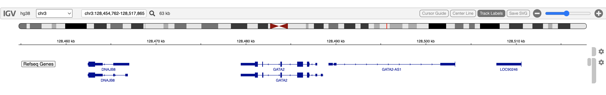

Obtain and Display H3K4Me3 K562 track from UCSC table browser
Paul Shannon
2022-07-24
ucscTableBrowser.RmdOverview
The UCSC Table Browser is a good source of genomic annotations of many different kinds. It has a clear, easily navigated user interface. It is a good complement to igvR.
The H3K4Me3 post-translational modification is frequently found in active promoters near transcription start sites. Here we obtain H3K4Me3 methylation marks in K562 cells in and around GATA2.
These are the steps involved:
- in igvR, display a genomic region of interest
- use your mouse to copy the resulting chrom:start-end genomic region string
- in the Table Browser, select your genome and dataset of interest
- paste the genomic region string into the UCSC Table Browser
- click get output to examine the specified data
- once you are satisfied that the data are of interest, fill in the output filename and save to a local tsv file
- back in R, use read.table to create a data.frame from that file
- construct and display an igvR DataFrameAnnotationTrack or DataFrameQuantitativeTrack
All these steps are shown below.
Display a genomic region of interest in igvR
library(igvR)
igv <- igvR()
setBrowserWindowTitle(igv, "H3K4Me3 GATA2")
setGenome(igv, "hg38")
showGenomicRegion(igv, "GATA2")
zoomOut(igv)
zoomOut(igv)
Obtain the coordinates
getGenomicRegion(igv)$chrom
[1] "chr3"
$start
[1] 128454762
$end
[1] 128517865
$width
[1] 63104
$string
[1] "chr3:128,454,762-128,517,865"Navigate the Table Browser
Use this URL: https://genome.ucsc.edu/cgi-bin/hgTables
Copy and past the region string into the UCSC Table Browser position field. Make other selections as shown.

Examine the Data
With the output filename blank, the get output button shows you the selected data as text in your web browser:

Download the Data
Return to the previous UCSC Table Browser Screen, fill in a download filename, click get output

Read the data into R
tbl <- read.table("~/drop/k562-h3k4me3-gata2.tsv", sep="\t", skip=1, as.is=TRUE, fill=TRUE)
colnames(tbl) <- c("chrom", "start", "end", "score")Make sure the column classes are as expected:
lapply(tbl, class)$chrom
[1] "character"
$start
[1] "integer"
$end
[1] "integer"
$score
[1] "numeric"Create and Display a Quantitative Track
track <- DataFrameQuantitativeTrack("H3K4Me3 K562", tbl, autoscale=TRUE, color="darkGreen")
displayTrack(igv, track)
Session Info
sessionInfo()
#> R version 4.2.0 (2022-04-22)
#> Platform: x86_64-apple-darwin17.0 (64-bit)
#> Running under: macOS Big Sur/Monterey 10.16
#>
#> Matrix products: default
#> BLAS: /Library/Frameworks/R.framework/Versions/4.2/Resources/lib/libRblas.0.dylib
#> LAPACK: /Library/Frameworks/R.framework/Versions/4.2/Resources/lib/libRlapack.dylib
#>
#> locale:
#> [1] en_US.UTF-8/en_US.UTF-8/en_US.UTF-8/C/en_US.UTF-8/en_US.UTF-8
#>
#> attached base packages:
#> [1] stats graphics grDevices utils datasets methods base
#>
#> other attached packages:
#> [1] BiocStyle_2.25.0
#>
#> loaded via a namespace (and not attached):
#> [1] knitr_1.39 magrittr_2.0.3 R6_2.5.1 ragg_1.2.2 rlang_1.0.4
#> [6] fastmap_1.1.0 highr_0.9 stringr_1.4.0 tools_4.2.0 xfun_0.31
#> [11] cli_3.3.0 jquerylib_0.1.4 systemfonts_1.0.4 htmltools_0.5.3 yaml_2.3.5
#> [16] digest_0.6.29 rprojroot_2.0.3 pkgdown_2.0.6 bookdown_0.27 textshaping_0.3.6
#> [21] BiocManager_1.30.18 purrr_0.3.4 sass_0.4.2 fs_1.5.2 memoise_2.0.1
#> [26] cachem_1.0.6 evaluate_0.15 rmarkdown_2.14 stringi_1.7.8 compiler_4.2.0
#> [31] bslib_0.4.0 desc_1.4.1 jsonlite_1.8.0